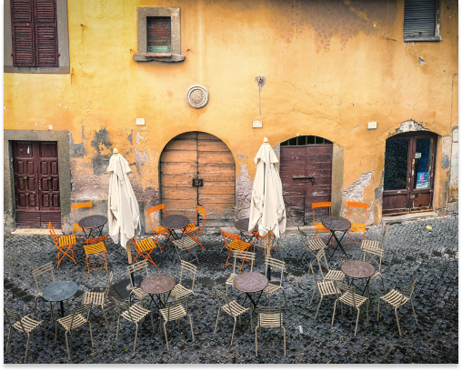

Pop-up Restaurant
- 
-
루이비통 팝업 레스토랑 ‘피에르 상 엣 루이비통’
최근 오픈 소식이 전해진 루이 비통 최초의 팝업 레스토랑 ‘피에르 상 앳 루이 비통’에 대한 자세한 정보가 공개됐다.
건축가 프랭크 게리 특유의 유리 패널 아래로 내리쬐는 자연광과 어우러지는 1만3천8백99 개의 모노그램 플라워 장식이 천장을 가득 메운 레스토랑에는 디자인 스튜디오 아틀리에 오이가 루이 비통 오브제 노마드 컬렉션을 위해 디자인한 ‘오리가미 플라워’ 패턴에서 영감받은 컬러풀한 꽃 장식이 더해졌다. 루이 비통을 대표하는 마스코트 비비엔의 대형 조각상이 입구에 자리하며, 지속가능성을 향한 행보의 일환으로 제품을 만들고 남은 가죽을 활용해 제작한 냅킨 홀더 또한 ‘비비엔’의 형상을 지니고 있다. 레스토랑 내부에는 한국 현대미술의 거장 박서보 화백의 연작 '묘법' 두 점이 전시됐다.
이번 팝업 레스토랑을 총괄하는 한국계 프랑스인 셰프 피에르 상 보이에는 루이 비통과의 협업을 위해 현지 제철 식재료를 활용하여 한국적 색채를 가미한 독창적인 메뉴를 개발했다. 런치와 디너 코스 모두에서 만나볼 수 있는 앙트레로는 저온에서 장시간 조리한 연어 콩피와 시트롱 캐비어 및 순무 카르파치오를 선보인다. 메인 요리로는 버섯 파이와 명이나물을 곁들인 한우 꽃등심 스테이크를 만나볼 수 있으며, 식용 꽃으로 아름답게 장식된 PS 비빔밥 역시 확인할 수 있다. 엄선된 와인 리스트와 페어링 옵션도 선택 가능하다.
Chef Union
-
시칠리아 길거리에서 만난 익숙한 고향의 맛
이상하게 들리겠지만 순전히 어떤 음식 하나가 궁금해 비행기로 수백㎞를 날아가 본 적이 있다. 본고장 파스타를 맛보기 위해 여행을 해도 될 텐데 굳이 요리 유학길에 올랐는가 하면, 악취 음식으로 유명한 발효 청어 ‘수르스트뢰밍’이 궁금해 일부러 스웨덴을 찾았다. 영국의 젊은 사람들은 먹지도 않는 장어 젤리와 미트 파이를 맛보려고 런던을 방문했다. 그 밖에도 더 있지만 이렇게 쓰고 나니 정말 이상한 사람인 것 같다. 먹어 봐야 제대로 알고 요리하고 글을 쓸 수 있다는 일종의 직업적 사명감 때문이었다고 한다면 너무 변명 같아 보일까.
파니 카 메우사의 맛은 한국인에겐 너무나도 익숙하다. 당장 순대 내장 허파를 사서 따뜻하게 데운 후 빵에 끼워 먹으면 비슷한 맛을 구현할 수 있다. 여기에 고소하고 진한 느낌이 더 강한데 맛의 핵심은 비장과 라드에 있다. 허파는 사실 식감 말고는 특별한 맛이 있는 건 아니다. 내장 특유의 진득한 감칠맛을 내는 요소는 비장이고 고소한 감칠맛은 라드 덕분이다. 현지에서는 카초카발로라고 하는 시칠리아 전통 치즈를 갈아 주거나 레몬을 뿌려 주는데 각각 다른 매력이 있고, 섞어도 좋다. 순대에 찍어 먹는 쌈장을 곁들여도 좋지 않을까 하는 발칙한 상상을 해 본다.
Dining Lab
-
자유와 파인다이닝
파인다이닝을 찾는 고객들은 특정한 셰프의 팬이거나 또는 완전히 색다른 요리를 경험하고 싶어 레스토랑을 홉핑(Restaurant Hopping: 레스토랑을 이곳저곳 다니면서 다양한 맛과 경험을 하는 것)하는 사람들이 많습니다. 그래서 일반적인 사람들의 입맛에 맞추거나, 보편적으로 기대하는 맛을 충족시키려고 노력하지 않아도 됩니다. 요리를 담는 스타일부터 식기 선정, 식재료 선정, 간을 내는 방법 등등 교과서적인 틀을 벗어나 마음껏 그들의 개성을 뽐낼 수 있는 셰프들의 갤러리이기 때문입니다.
역설적인 부분이긴 하지만 원가율이 높아도 되기 때문에 셰프가 원하는 식재료를 자유롭게 선택해서 사용할 수 있습니다. 예를 들어, 세계 3대 진미 중 하나로 꼽히는 캐비어는 단가가 높아 일반적인 매장에서는 엄두도 내지 못하는 재료입니다. 하지만 파인다이닝 레스토랑에서는 부가가치가 있는 요리들을 만들기 때문에 캐비어나 트러플, 푸아그라와 같은 고급 식재료를 사용할 수 있습니다.